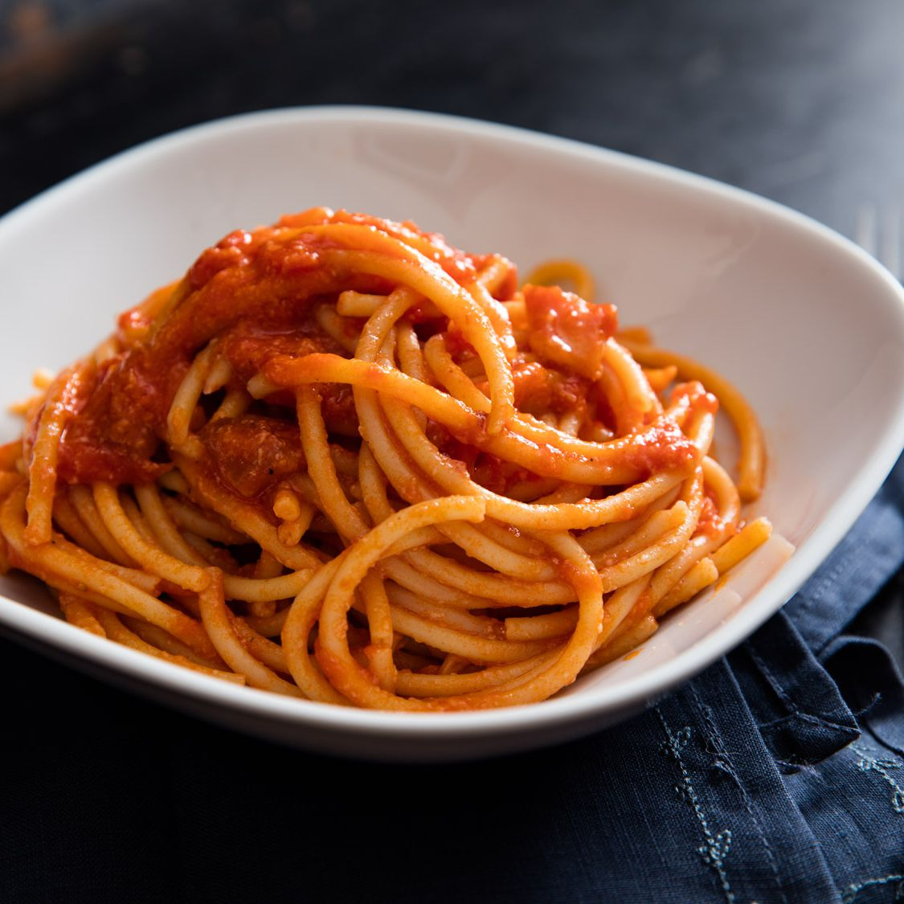

Pasta Amatriciana

Pureed tinned tomatoes cooked with pancetta and combined with parmesan.
This is so easy and quick to make, with only a few
ingredients it's sure to become a staple in any home.
Ingredients
- 250g Linguine (can use any long pasta)
- 100g Pancetta/Bacon/Guanciale
- A Handfull, Finley Grated Parmesan
- 1 Tin, Whole Peeled Tomatoes
- Fresh Cracked Black Pepper
- Salt, for the Pasta Water
Directions
- Bring a large, heavy bottomed pot of water to the boil and add salt.
This will be used to cook the pasta.
- Prepare your meat and cheese. Cut the Guanciale/pancetta/bacon into thin
little strips. If the exterior of whatever meat
you are using is dried out, make sure you cut it
off before cooking. Grate your paremsan and set aside.
- If you want a smooth textured sauce (this is how i prefer)
blend your tomatoes in a blender. Alterntivley crush these using your
hands for a more rustic sauce.
- To a cold pan, add whatever meat you are using and over a medium heat slowly but completly
render the fat, feel free to add a tablespoon of olive oil if needed. Once browned add some cracked black pepper to the oil and let
bloom for a minute, then add the tomatoes. Let this simmer and reduce till thickened.
- Add your pasta to the pasta water as your sauce thickens and cook till 2 minutes shy of aldente, add
your pasta to the tomato sauce and allow the pasta to finish cooking. Add pasta water as needed before finishing with a
good handfull of parmesan cheese.
- plate and garnish with more parmesan cheese and some more black pepper, enjoy!